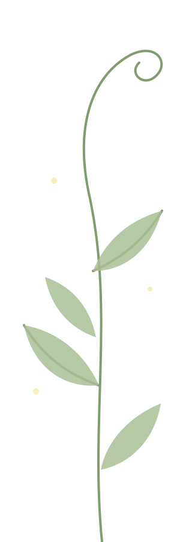

Un Respiro che Fiorisce
Uno spazio d'ascolto gratuito dove depositare ciò che pesa e ritrovare il tuo ritmo.
Pensati seduto, tranquillo, in un luogo per te sicuro e Respira. Respira profondamente fino a quando i battiti del tuo cuore non rallentano e ora scrivi. Scrivi di getto. Lascia andare tutto ciò che ti sta impedendo di Respirare a pieni polmoni.
Un Respiro che Fiorisce nasce come spazio sacro per permetterti di tornare a Respirare, per permetterti di rifiorire dopo aver per troppo tempo vissuto in apnea.
Come Accade la Magia 3 Semplici Passi
-
Il tuo momento di sfogo
Usa il modulo qui sotto per scrivermi la tua storia, un pensiero che non ti dà pace o semplicemente ciò che ti senti di far uscire oggi. Non pensare alla forma o alla punteggiatura: lascia scorrere le parole.
-
L'ascolto sacro
Accoglierò ciò che mi affidi con totale rispetto e presenza. Leggerò la tua storia prendendomi il tempo per riordinare i fili e guardarla attraverso la luce dell'empatia.
-
La tua lettera di restituzione
Riceverai direttamente nella tua e-mail una risposta pensata solo per te: uno specchio di parole dolce e sincero da rileggere ogni volta che ne avrai bisogno.